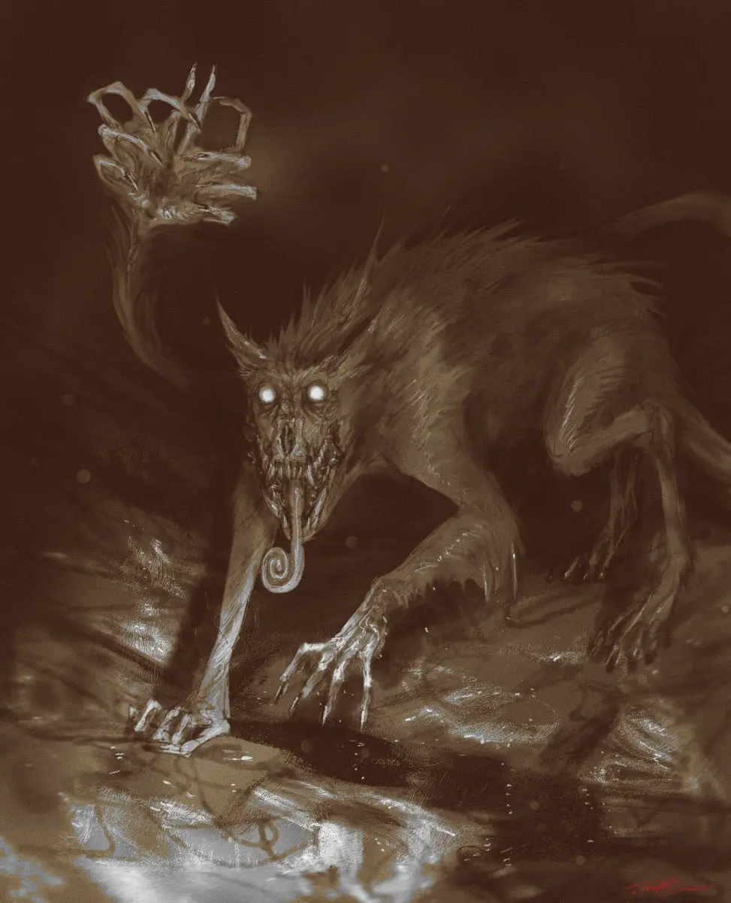
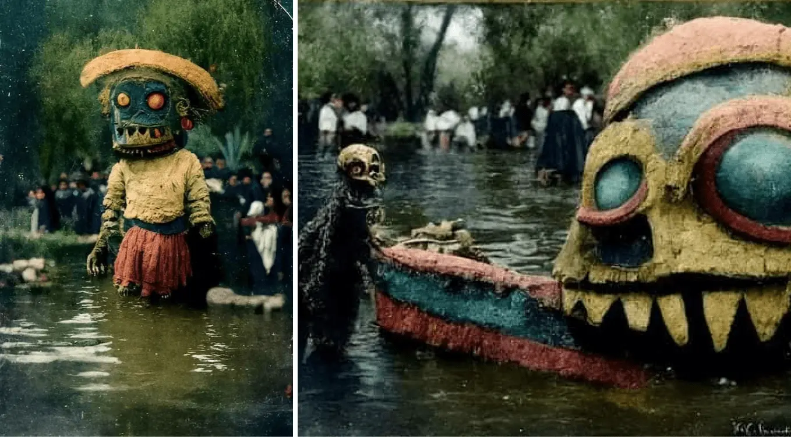

Una historia sobre una canción
Iba caminando por uno de los parques urbanos más importantes de nuestra tierra. En este lugar se encuentra el Museo Nacional de Antropología, un espacio repleto de cultura e historia de México. Mi objetivo era claro: encontrar una historia o alguna inspiración para nuestra siguiente canción. Había escuchado a mis bandas favoritas, leído letras de canciones que me inspiran e incluso ya había visto videos en internet sobre historias de terror o historias prehispánicas de nuestro México… y aun así, la inspiración no llegaba.
Dentro del museo, en la sala dedicada a los mexicas encontré lo que estaba buscando. Sangre, violencia e incluso un poco de misterio. Desde que empecé a investigar más a fondo sobre la historia de nuestro país, me ha quedado claro que los mexicas eran… en pocas palabras, violentos. Basta con mirar el Tzompantli para entenderlo.
La inspiración finalmente llegó. En esta misma sala se hablaba de una leyenda, una criatura, una escultura… Ahuízotl, “El espinoso del agua”. Un ser que encajaba perfectamente con lo que quería transmitir… Miedo, terror y misterio.
Llegue a casa inspirado. Cuando era niño ya había escuchado un poco sobre aquella leyenda: Una criatura caracterizada por tener una mano humana en el extremo de la cola en donde los antiguos mexicanos lo consideraban un enviado del dios de la lluvia, Tlaloc, quien residía en las profundidades del agua. Su función era atrapar con la mano que tenía en la cola a los hombres para ahogarlos y enviarlos a los dioses de la lluvia eterna como una ofrenda o un sacrificio… no lo sé.
Existen varios videos, artículos en internet y sobre todo imágenes de artistas independientes que reflejan a la perfección el miedo que genera, o que se quiere transmitir sobre el Ahuítzolt. Simplemente hay que observar las siguientes imágenes:

La emoción y la fascinación llegó a su esplendor cuando navegando por internet me encontré con la siguiente información: Increíbles fotografías reviven la leyenda del Ahuízotl en Xochimilco.Cryterio es una banda de Xochimilco, nosotros somos de Xochimilco… semejante coincidencia y una historia que llegó como anillo al dedo para una letra que hacía falta. Obviamente se tenía que escribir una letra con esta fascinante criatura…
Imágenes de 1930, coloreadas digitalmente y generadas con inteligencia artificial por la artista “Antonieta Martínez”
Estas fotos fueron restauradas y se les dio color. Un plan que comenzó en mayo de 2021. Vienen acompañadas de una leyenda: en la actualidad está estrictamente prohibido capturar imágenes de los Ahuízotl. Antes, estos seres salían a convivir con los trabajadores de las chinampas y a jugar con los lugareños. Hoy en día es muy difícil ver a un Ahuízotl por los canales de Xochimilco y cuando aparecen, es porque demandan una ofrenda.
Se dice que si encuentras a un Ahuízotl, éste te permite andar por las aguas como si uno estuviese en un chapoteadero, sin importar la profundidad del cuerpo de agua.

Enlace de referencia: Aquí